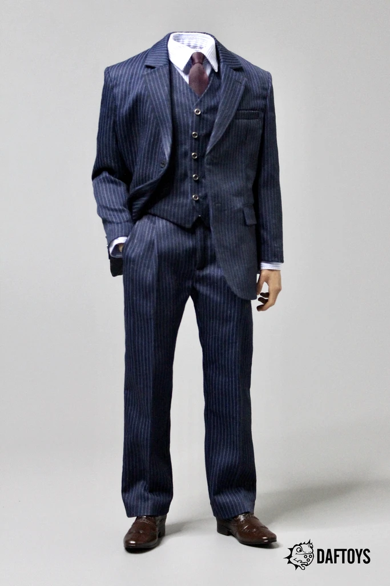

Lebenslauf
- Serdar Balkis
- Atillastr. 176 12105 Berlin
- 33 Jahre
- Tel: 0178/ 5580 027
- GitHub Serdar68
Schule
- Paul-Klee-Grudschule
- Theodor-Haubach-Oberschule
Werdegang
- IB Hotel am schlachtensee (Koch)
- lafayette (cleaner)
- Ikea (cleaner)
- Dekra (Mechaniker)
- Luna pizza (liefarant+Koch)
- Taxi Fahrer (licens)
- Taxi unternehmen (kleinunternehmer)
- Taxi Driver (Driver)
- DCI Student (Web Developer)
- 2005
- 2006
- 2007
- 2008-2010
- 2010-2012
- 2013-2015
- 2015-2019
- 2020-2021
- 2021-
Skill´s
- Coding in HTML
- Coding in CSS
- Coding Javascript
- Computer Build (selfmade pc´s)
- Photo shop (Basic knowledge)
Sprachkentnisse
Hobby´s